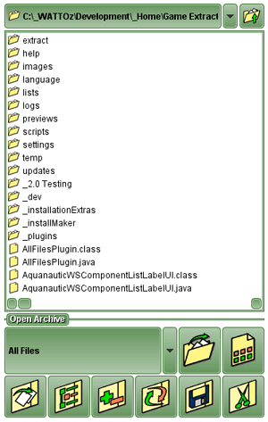

DirectoryList
Back to Index
The DirectoryList is the
SidePanel
that shows the list of files on the computer.
When you right-click on a file in the DirectoryList, a menu of common tasks is displayed.

DirectoryList